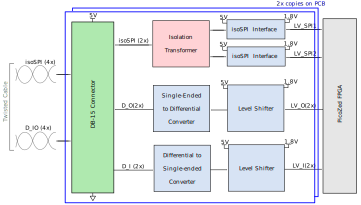
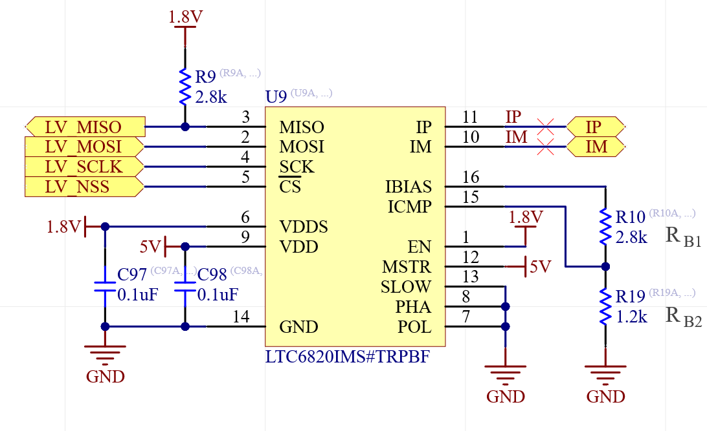

Expansion Port¶
This document describes the design considerations and implementation details for the expansion port interface on the Advanced Motor Drive Controller (AMDC). The expansion port consists of the isoSPI and differential I/O interface. The block diagram of the implementation is presented, and each block is discussed in detail. The connector interface and PCB layout information are also provided in this document.
Relevant Versions of AMDC Hardware¶
AMDC REV D
Design Requirements and Considerations¶
The design requirements for the isoSPI and differential I/O (D_IO) interface are as follows:
Add digital port interface to communicate with the PicoZed.
Enable differential communication to ensure high noise immunity.
Suppress common-mode noise using an isolation transformer for isoSPI.
Support longer cable lengths for isoSPI interface.
Achieve high throughput using differential I/O interface. The maximum data rate of the interface is 10Mbps.
Block Diagram / External Connections¶

1. DB-15 Connector¶
A total of two DB-15 D-sub high-density connectors are used for both the isoSPI and differential I/O (D_I / D_O) interface. Each connector has pins for two isoSPI communication interfaces, two differential I/O interfaces, one pin for ground signals, and one pin for 5V supply from the AMDC. More details on the DB-15 connector can be found in here. The location of these connectors on the AMDC is shown below:

The pin mappings for each DB-15 connector is shown below:
Pin number |
Signal name |
|---|---|
1 |
5V |
2 |
D1_I_P |
3 |
D1_I_N |
4 |
D2_I_P |
5 |
D2_I_N |
6 |
NC |
7 |
isoSPI1_P |
8 |
isoSPI1_N |
9 |
isoSPI2_P |
10 |
isoSPI2_N |
11 |
GND |
12 |
D1_O_P |
13 |
D1_O_N |
14 |
D2_O_P |
15 |
D2_O_N |
The isoSPI signals that connect to the PicoZed pins and Zynq-7000 FPGA module can be found at the isoSPI section of the pin mapping document.
2. IsoSPI communication interface¶
The isoSPI communication interface is implemented using the LTC6820 IC. This provides a bi-directional interface between standard SPI signals and differential pulses. This IC can operate at a maximum SPI communication speed of 1Mbps for a cable length of up to 10m. This can support cable length of up to 100m (speed drops to 0.5Mbps). This IC also translates the 1.8V SPI signals from the PicoZed to 5V. For termination, a 120Ω resistor is added. Bias resistors (RB1 and RB2) are used to adjust the drive current to the differential lines, in this design they set the drive current to 10mA. For this choice of drive current, a cable length of up to 50m can be used. To support longer cable length the drive current needs to be set to 20mA using the bias resistors values from the datasheet (refer Table 6). The LTC6820 schematic with the bias resistors (RB1 and RB2) is shown in the following figure.

The maximum supply current consumed by the IC including to drive currents for differential lines is 15.8mA, which corresponds to 79mW for a 5V supply. More information regarding the operating conditions, bias resistors, maximum throughput rate, can be found in the datasheet.
To isolate the differential isoSPI signals, the HX1188NLT pulse transformer is used. More information on the pulse transformer is found in the datasheet.
3. Differential I/O interface¶
The I/O interface is connected to the FPGA I/O pins of the PicoZed, which can be configured as SPI or UART interface. The I/O signals are converted to differential I/O using differential line driver/receiver. This interface is designed to achieve a maximum data rate of 10Mbps.
Single-ended to differential converter¶
The single-ended signal is converted into differential I/O using the AM26C31 differential line driver. Maximum data throughput of 10Mbps can be achieved using this IC. The maximum supply current consumed by the IC including the drive currents for the differential lines is around 20mA, which corresponds to 100mW for a 5V supply. For more information refer to the AM26C31 datasheet.
Differential to single-ended converter¶
The differential signal is converted into a single-ended signal using the AM26C32 differential line receiver. Maximum data throughput of 10Mbps can be achieved using this IC. The maximum supply current consumed by the IC including the drive currents for the differential lines is around 10mA, which corresponds to 50mW for a 5V supply. For more information refer to the AM26C32 datasheet.
Voltage level shifter¶
The 5V voltage level from the differential line receiver is translated to 1.8V for the PicoZed using the SN74LVC8T245 level translation IC. This IC supports bi-directional translation and is also used to translate the low-voltage level (from PicoZed) to the 5V level used by the differential line driver. The voltage levels are translated based on the supply voltage rail A (VCCA) and supply voltage rail B (VCCB). The operating voltage range for both A and B ports is from 1.65V to 5.5V. For more information refer to the IC datasheet.
4. 5V supply¶
The expansion port provides 5V supply to the externally connected devices. The maximum allowable current from the supply is 1A.
PCB Layout¶
The DB-15 connector and the pulse transformer are located on the top layer. The isoSPI interfacing IC, differential line driver, receiver, and voltage translator ICs are located on the bottom layer. The top layer is used to route the signals from the DB-15 connector to the pulse transformer. Inner signal layers two and three are used to route the signals from the DB-15 connector to the differential line driver and receiver ICs. The remaining signals from the ICs to the PicoZed connector are routed using the bottom layer. All the ICs consume less than 100mA, so the 10mil thickness trace is used for power supply traces. Most of the signal traces are routed using 6mil trace thickness.